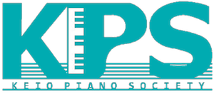

Congratulations on your admission.
新入生の皆さん、ご入学おめでとうございます。KPSのホームページにお越し下さり、ありがとうございます。 このページでは入部をお考えの方に向けた情報を掲載しています。
 KPSに所属する部員は各学年２０〜３０人で、サークル全体だと１００名程です。部員は慶應生で構成されていて、学部、性別の偏りもなく色々な部員が在籍しています。ピアノ演奏のレベルについては小さな頃からずっとピアノを続けいる人、今でもレッスンを受けている人もいれば、 昔ピアノを習ったことがあるがやめてしまった人、大学から始めた人、またピアノは弾けないけれど音楽が好きで聴く方をメインにしている人もいます。
関わり方はそれぞれですが、皆でピアノを愉しみ、皆がピアノが好きという気持ちで繋がっています。
サークルとしての活動は演奏会、合宿くらいでそれぞれの参加は任意です。年に一度ある総会には出席することが求められますが、それ以外は基本的に自由にサークルに関わることができます。他のサークルにも所属したい、アルバイトもしっかりやってみたいといった方も所属しやすいサークルです。公式の行事がない期間も部員が有志でイベントを企画し、開催しているので年間を通してイベントは多めです。 (総会ではサークルの会則や演奏会の運営の仕方、サークルの代表などを決定します)
普段の活動場所は塾生会館314合室です。昼食を一緒に食べたり、空き時間をピアノを弾きながら過ごしたりしています。
KPSでは新入生の方が入学なされる４月の時期に新歓イベントを開催しています。興味を持ってくださった方は是非、新歓イベントにお越しください。実際には、サークルがどんな雰囲気なのかを感じていただけると思います。
以上のイベントが企画されております。サークルに所属する人や、新しくサークルに所属する人と親睦を深められます!
それぞれ、参加の希望や詳細の質問などは Line公式アカウント 2016 慶應ピアノソサィエティー新歓（＠idj5208nで検索してみてください） にお問い合わせください！
新歓イベントが開催されるのは４月ですが、KPSでは年間を通じて部員を募集しております。KPSに興味を持ってくださった方は、いつでもお気軽に塾生会館314号室にいらしてください。 ホームページの連絡フォームからの連絡もお待ちしております。
日吉代表: 長谷川 ( haruna.104645@gmail.com)
Contact Form